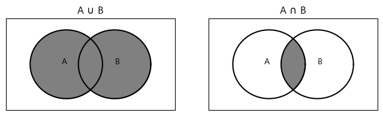
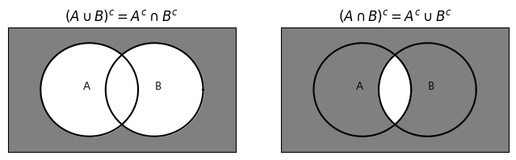

1. 확률이론
1.1 표본공간과 사건
키워드
- 실험: 어떤 현상의 관찰결과를 얻기 위한 과정
- 표본공간($S$): 모든 관찰 가능한 결과의 집합
- 사건: 표본공간의 부분집합
정의 1.1
사건 $A$와 $B$가 표본공간 $S$상에 정의되었다고 하자.
- 사건 $A$와 $B$가 동시에 속하는 사건을 $A$와 $B$의 공통부분이라고 하고 $A \cap B$라고 표기한다.
- 사건 $A$ 또는 $B$에 속하는 사건을 $A$와 $B$의 합이라고 하고 $A \cup B$로 표기한다.
예 1.1
동전을 3회 던지는 실험에서 앞면을 $H$, 뒷면을 $T$로 표시하면 표본공간은 $$ S = {\ HHH,\ HHT,\ HTH,\ THH,\ HTT,\ THT,\ TTH,\ TTT\ } $$ 이고, ‘2회 앞면이 나오는 사건’은 $$ A = {\ HHT,\ HTH,\ THH\ } $$ 이다.
예 1.2
예 1.1의 실험에서 ‘앞면이 나오는 횟수’를 고려하면 표본공간은 $$ S = {\ 0,\ 1,\ 2,\ 3\ } $$ 이 되고, 이때 ‘최소한 1번 앞면이 나오는 사건’은 $$ A = {\ 1,\ 2,\ 3\ } $$ 이다.
예 1.3
한 개의 동전을 뒷면이 나올 떄까지 던질 때의 표본공간은 $$ S = {\ T,\ HT,\ HHT,\ HHHT,\ \cdots\ } $$ 가 된다. 이처럼 표본공간의 원소가 무한개일 수도 있다. 이때 ‘3회째 뒷면이 나오는 사건’은 $$ A = {\ HHT\ } $$ 이다.
예 1.4
어떤 기계의 수명시간에 대한 측정을 할 때, 가능한 관찰값은 음이 아닌 실수이다. 따라서 표본공간은 $$ S = {\ x\ |\ 0\ \le\ x\ < \infty\ } $$ 여기서 ‘20시간 이상 작동하는 사건’은 $$ A = {\ x\ |\ x\ \ge\ 20 \ } $$ 이다.
예 1.5
주사위를 1회 던져 나오는 눈의 수를 관찰하였다고 할 때, 표본공간은 $$ S = {\ 1,\ 2,\ 3,\ 4,\ 5,\ 6,\ }$$ 이 된다. 사건 $A$를 짝수의 눈이 나오는 경우로, $B$를 3의 배수가 나오는 경우로 정의하면, $$ A = {\ 2,\ 4,\ 6\ }\quad B = {\ 3,\ 6\ } $$ 으로 표현된다. 이 경우 $A$와 $B$의 공통부분과 합은 각각 $$ \begin{align} A \cap B &= {\ 6\ }\\ A \cup B &= {\ 2,\ 3,\ 4,\ 6\ }\\ \end{align} $$
정의 1.2
동일 표본공간 $S$상에 정의된 두 사건 $A$와 $B$의 공통부분이 없을 때, 즉 $A \cap B = \varnothing$이면 두 사건 $A$와 $B$는 상호배반이라고 한다.
예 1.6
예 1.1에서 ‘최소한 한 번의 앞면’이 나오는 사건과 ‘모두 뒷면’이 나오는 사건은 공통부분이 없으므로 상호배반이다.
정의 1.3
사건 $A$가 표본공간 $S$상에 정의되어 있을 때, $A$에 포함되지 않는 모든 $S$의 원소의 집합을 $A$의 여사건이라고 하며 $A^c$로 표기한다.
예 1.7
예 1.5에서 ‘짝수의 눈’이 나오는 사건의 여사건은 ‘홀수의 눈’이 나오는 사건이 된다.
두 개 이상의 사건들 사이의 관계가 때로는 복잡하며, 이때는 벤 다이어그램들을 활용하면 편리하다.
$A$와 $B$의 합 $A \cup B$와 공통부분 $A \cap B$는 다음과 같다.
show code
import numpy as np
from matplotlib import pyplot as plt
from matplotlib import font_manager, rc
import matplotlib
font_name = font_manager.FontProperties(fname="c:/Windows/Fonts/malgun.ttf").get_name()
rc('font', family=font_name)
matplotlib.rcParams['axes.unicode_minus'] = False
fig, ax = plt.subplots(1, 2, figsize=(8,2))
theta = np.linspace(0, 2 * np.pi, 1000)
radius = 7.5
a1 = radius * np.cos(theta) - 5
a2 = radius * np.sin(theta)
b1 = radius * np.cos(theta) + 5
b2 = radius * np.sin(theta)
ax[0].plot(a1, a2, color='black')
ax[0].plot(b1, b2, color='black')
ax[0].fill_between(a1, a2, color = 'gray')
ax[0].fill_between(b1, b2, color = 'gray')
ax[0].set(xlim=(-17.5, 17.5), ylim=(-10, 10))
ax[0].set_title(r"A $\cup$ B")
ax[0].text(-6, 0, 'A')
ax[0].text(5, 0, 'B')
ax[0].tick_params(left = False, right = False , labelleft = False ,
labelbottom = False, bottom = False)
ax[1].plot(a1, a2, color='black')
ax[1].plot(b1, b2, color='black')
ax[1].fill_between(a1[a1>0], a2[a1>0], color = 'gray')
ax[1].fill_between(b1[b1<0], b2[b1<0], color = 'gray')
ax[1].set(xlim=(-17.5, 17.5), ylim=(-10, 10))
ax[1].set_title(r"A $\cap$ B")
ax[1].text(-6, 0, 'A')
ax[1].text(5, 0, 'B')
ax[1].tick_params(left = False, right = False , labelleft = False ,
labelbottom = False, bottom = False)
plt.show()

드 모르간 법칙
$$ (A \cup B)^c = A^c \cap B^c\ (A \cap B)^c = A^c \cup B^c $$
show code
fig, ax = plt.subplots(1, 2, figsize=(8,2))
theta = np.linspace(0, 2 * np.pi, 1000)
radius = 7.5
a1 = radius * np.cos(theta) - 5
a2 = radius * np.sin(theta)
b1 = radius * np.cos(theta) + 5
b2 = radius * np.sin(theta)
ax[0].patch.set_facecolor('gray')
ax[0].plot(a1, a2, color='black')
ax[0].plot(b1, b2, color='black')
ax[0].fill_between(a1, a2, color = 'white')
ax[0].fill_between(b1, b2, color = 'white')
ax[0].set(xlim=(-17.5, 17.5), ylim=(-10, 10))
ax[0].set_title(r"$(A \cup B)^c = A^c \cap B^c$")
ax[0].text(-6, 0, 'A')
ax[0].text(5, 0, 'B')
ax[0].tick_params(left = False, right = False , labelleft = False ,
labelbottom = False, bottom = False)
ax[1].patch.set_facecolor('gray')
ax[1].plot(a1, a2, color='black')
ax[1].plot(b1, b2, color='black')
ax[1].fill_between(a1[a1>0]-0.3, a2[a1>0], color = 'white')
ax[1].fill_between(b1[b1<0], b2[b1<0], color = 'white')
ax[1].set(xlim=(-17.5, 17.5), ylim=(-10, 10))
ax[1].set_title(r"$(A \cap B)^c = A^c \cup B^c$")
ax[1].text(-6, 0, 'A')
ax[1].text(5, 0, 'B')
ax[1].tick_params(left = False, right = False , labelleft = False ,
labelbottom = False, bottom = False)
plt.show()
